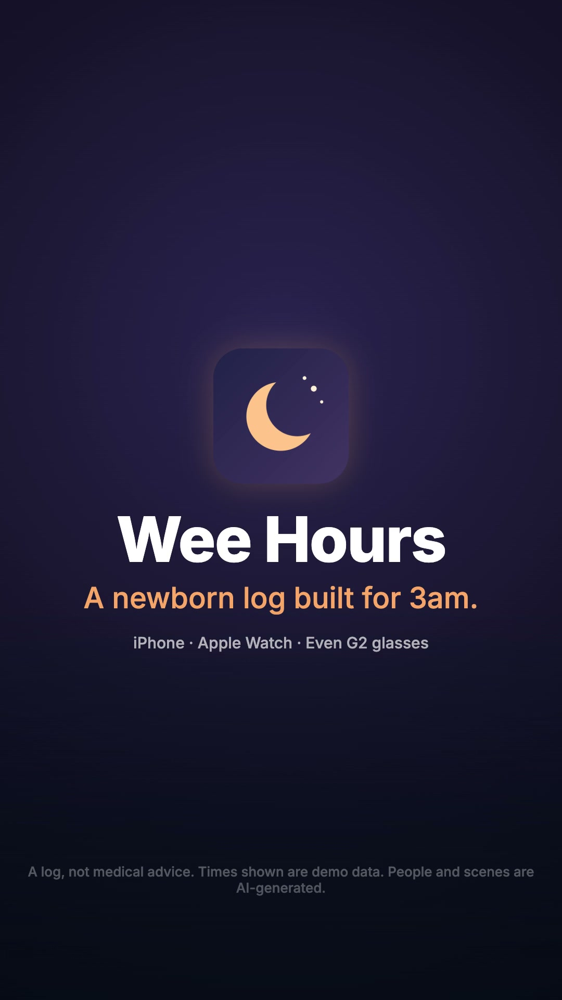

The plan for Wee Hours' promo: a 30-second family sitcom, plus 15-second cuts in 16:9 and 9:16. At 3am Jun and Mei meet at the fridge, each holding an empty bottle, each sure they fed her. In the morning their four-year-old Doudou settles it to the minute. Then Wee Hours, on his wrist: with the baby in both arms and the lights off, Jun whispers the feed to his watch and it's logged; Mei sees it on her phone and goes back to sleep; when the baby's asleep, he logs without a word, with a tilt of his wrist. And Doudou copies him. The look comes from your reference: a bright, real-looking family sitcom with an earnest dad and a deadpan little girl. You make the characters, shots and music in Google Flow from the prompts below; I make the recordings of the iPhone, Watch and glasses apps, the narration and the edit.
Story + scriptsSettled; two narration lines trimmed in the edit (§1)
CharactersJun, Mei and Doudou made in Flow
Flow shotsAll 7 in and used; shot 5 regenerated with Mei
Voiceoveram_fenrir narration + the family's own Flow lines
MusicTake 2 of each picked (§1)
EditRendered: your review (§1)
YouTubeKit ready for all three cuts (§8)
What changed from the first plan
The promo-video workflow learned a lot making Headway's video. This plan follows it now:
Change
Why
The story is set in Wee Hours' own world (3am nursery, the fridge, the bedroom, a Saturday-morning living room). The first plan's shot 3 rebuilt your reference's kitchen-table scene, fruit tarts and all; it's gone.
Your reference sets the look (faces, wardrobe, light, sitcom grade), not the setting or plot.
Each character is four Flow fields: portrait, body, character info, voice, instead of one block.
That's how Flow's character maker works; you can redo one step without the others.
Jun wears his watch in his saved character, from the first shot.
A worn product must look the same in every shot; it's how he logs with full hands.
The jokes are spoken on camera in the characters' Flow voices ("Did I feed her?", "I fed her.", Doudou's "Two-ten. Left side. You were snoring."); the narration explains the app.
Flow lip-syncs lines written into a shot prompt; funny lines land better from the character.
The Watch is the hero: at 3am, baby in both arms, Jun whispers the feed to his watch (shot 4); later, with the baby asleep, he logs without a word by tilting his wrist (shot 6). Doudou's payoff copies the whisper.
Voice on the wrist is the selling point: no phone, no screen, no lights, hands stay on the baby. The audio goes to the iPhone, which understands it on the device, and the status comes back to the watch. Tilt mode logs with only the watch arm.
A Flow settings card (Video · Ingredients, 16:9, drafts, keepers), two music takes per length, and the promo folder with an animatic, ready for your files.
Fewer wasted credits; I pick the music take by measuring it against the story.
Shot 5 is regenerated and re-cut: Mei, not a child, reads her phone under "My wife sees it on hers" and goes back to sleep. Next for you: watch and listen to the three cuts in §1, and check the calls I made without you: the music takes, the narration voice and two narration lines I changed. Write what to change in Your notes and click Copy summary, or tell me. When a cut is right, upload it with §8 and send me the link: the 30 s goes on Wee Hours' home page and docs page.
The edit: three cuts to review
Built in Remotion (branding/promo-videos/src/weehours-launch) from your seven Flow shots, take 2 of each music track, eight recordings of the real iPhone and Watch apps, and the am_fenrir narration. The jokes are in the family's own Flow voices; the narration, as Jun, says what Wee Hours does.
Take 2 of both lengths (≈103 BPM). Each cut opens on the take's tiptoeing intro, then jumps a whole number of bars ahead, so the groove stops as the end card comes in (30 s) and the track's final hit lands on the tagline (15 s).
Say "take 1".
Narration voice
am_fenrir, the Kokoro voice closest to Jun's Flow voice, so the narration and his on-camera lines sound like one man. Takes in am_michael, am_puck, am_echo and bm_george are ready.
Name another voice.
"Except our four-year-old."
Cut from the first narration line: the shot-3 reveal follows straight on, and Doudou says it better herself.
—
"Mei sees it on hers"
Now "My wife sees it on hers". Kokoro says "Mei" so that it's heard as "They", and the name has no meaning to a viewer anyway.
—
Tilt mode
Shows a silent diaper log (tilt, lock, pinch), not a feed: the feed was just whispered, and a second feed minutes later would look wrong.
—
Pace
Cuts sit on the music's beats (each planned cut moves to the nearest beat within 0.25 s). The Watch beat (0:11–0:18) goes shot 4 → the watch listening → the iPhone logs the bottle → the watch's status says "Fed just now".
Transitions
A shot into its recording: a cross-zoom. Between beats: a blurred slide. Screens of one device: a quick fade. Into the end card: a dreamy zoom.
Captions
Every spoken word, word by word, timed from a speech-recognition pass; a line now leaves before the next one comes in. The end card carries the tagline instead of a caption.
Sound
Music ducks under every line. Loudness after a two-pass normalise: −14.5 LUFS for all three (peaks −0.4 dBFS on the 30 s, −1.2 on the 15 s); platforms target about −14.
On screen
"Demo data" on every recording. End card: "A log, not medical advice. Times shown are demo data. People and scenes are AI-generated." The simulator's clock is covered on the watch.
9:16
Flow shots centre-cropped; the watch and phone are scaled up for the tall frame; captions sit higher.
What I checked: frames every second of each cut and close-ups at the caption changes; the subtitle text against the script; lengths and loudness. What I couldn't: listen. Please watch with sound: the mix of Flow's voices with the narration and the music. One honest note on the Watch beat: the watch really opens recording, but a simulator can't whisper, so the phone was handed the words as Whisper writes them ("Bottle, 90 mils.") and ran its normal pipeline from there. That turned up a real bug: "mils" lost its amount. It's fixed in the app, with a test and a What's New line.
The renders are reproducible (npx remotion render weehours-launch-30 --concurrency=2 etc. in branding/promo-videos, then the loudness pass) and make this report 28 MB, so media/edit/ stays out of git.
The story: 3am, two empty bottles, one witness
Every new parent knows the 3am question: did anyone feed her? Jun, swaying in the dark nursery, can't remember. At the fridge he meets Mei, each holding an empty bottle, each sure: "I fed her." On Saturday morning, collapsed on the sofa, they're still arguing, until four-year-old Doudou walks past with her juice box and settles it: "Two-ten. Left side. You were snoring." Then Wee Hours, on his wrist: the next night, baby in both arms and the lights off, Jun raises his watch and whispers "Bottle, ninety mils." His phone understands it and logs it, and the watch shows the new status. Mei sees it on her phone and goes back to sleep. When the baby is finally asleep on his chest, he doesn't say a word: a tilt of the wrist and a pinch, and it's logged. The payoff belongs to Doudou, who has been watching: she whispers into her bare wrist.
Tagline (end card)
A newborn log built for 3am.
On-camera lines (in the shot prompts, spoken in Flow)
Shot
Who
Line
1
Jun, half-asleep, eyes snapping open
"Did I feed her?"
2
Jun and Mei, at the same time
"I fed her."
3
Doudou, deadpan, not stopping
"Two-ten. Left side. You were snoring."
4
Jun, whispering into his watch
"Bottle, ninety mils."
7
Doudou, into her bare wrist, copying shot 4
"Two cookies. Logged."
Narration (Jun, first person; between the lines above)
Narration, 30-second cut
At three a.m., nobody remembers anything.
Now I just whisper to my watch. My phone understands it, right there.
My wife sees it on hers, and goes back to sleep.
Baby asleep? Not a word. I just tilt my wrist.
Wee Hours. A newborn log built for three a.m.
Narration, 15-second cut
Now I just whisper to my watch, and Wee Hours logs it.
We both see it, and we both go back to sleep.
Wee Hours. A newborn log built for three a.m.
Small text on the end card
A log, not medical advice. Times shown are demo data. People and scenes are AI-generated.
On camera vs narration. The 15-second cut keeps shots 1 and 2 with their lines ("Did I feed her?", "I fed her."), then shot 4 and the Watch, then the narration. If the Flow takes sound good, the edit keeps Flow's audio for the lines and the narration skips them. For the narration I pick the Kokoro voice closest to Jun's Flow voice, so he sounds like one person; if they don't match well enough, the edit mutes Flow and Jun's lines become captions over the music.
The characters: the Chen family
Made in the style of your reference, not as copies of anyone in it: a photoreal East Asian family in a bright, modern home, comedy carried by faces (his earnest pleading, her slow side-eye). New, original faces.
Keep from the reference
The look of a polished short-drama sitcom: natural skin, soft warm light, casual clothes in red plaid and gingham, expressive faces held a beat longer for the laugh.
Not from the reference
Its setting and plot: no kitchen-table scene with tarts, no mom cooking in the background. The story happens where Wee Hours is used: the nursery at night, the fridge, the bedroom, the living room the morning after.
Don't
Upload the reference screenshot into Flow as an ingredient: it's another creator's frame, and it would pull Flow towards those exact faces. The prompts carry the style instead.
The newborn
Not a saved character: always a sleeping or fussing baby swaddled in a cream blanket, face mostly turned towards a parent's chest, which keeps it consistent across shots.
Jun, the dad: portrait, body, character info, voice
Flow → Characters → New · 1. Portrait: paste into "Describe your character…", make 2–4 and keep the face you like · 2. Create body: with that portrait selected, click Create body and paste into "What do you want to change?" · save as Jun · 3. Character info: on Jun's page, "Describe how your character acts…" · 4. Voice: Select a voice → pick, paste the sample dialogue and the performance, Preview, Add to character · he narrates too, so his Flow voice sets the narration's voice
Jun · 1 · Portrait prompt
Jun, a loving, earnest new dad in his early thirties, sleep-deprived and very expressive: wide pleading eyes when he explains himself, a proud grin when something finally works.
Face: East Asian man, warm friendly features, light stubble, faint tired shadows under his eyes.
Hair: short black hair, slightly messy and flattened on one side as if he just got up.
Clothing in frame: an unbuttoned red-and-cream plaid short-sleeve shirt over a plain white T-shirt. No logos, no text.
Photorealistic, natural skin texture, head-and-shoulders portrait facing the camera, soft warm indoor light, plain light-beige background, 85mm, shallow depth of field.
Jun · 2 · Body prompt (Create body)
Keep his face, hair and expression exactly the same. Show him full length, head to toe, standing and facing the camera.
Body: average build, a little slouched from tiredness, a white burp cloth over his left shoulder, one hand rubbing the back of his neck.
Wrist: a plain black smartwatch with a black band on his left wrist, its face blank, worn high enough to raise to his mouth. He always wears it.
Outfit: the unbuttoned red-and-cream plaid short-sleeve shirt over a plain white T-shirt, loose grey cotton lounge trousers, simple grey slippers. No logos, no text, no brand marks.
Same soft warm indoor light, plain light-beige background, 50mm, photorealistic, natural skin texture.
Jun · 3 · Character info ("Describe how your character acts…")
Jun is a devoted, frazzled new dad who is sure he remembers everything and never does. Earnest, warm, a little dramatic: caught out, he pleads with open hands; when something works, a small, proud, ridiculous grin.
On camera: sleepy and swaying at night, eyes drifting shut and snapping open; big honest reactions by day. Always gentle with the baby, usually asleep on his chest. His daughter Doudou outsmarts him: he answers her with a sheepish face or a facepalm.
Habits: a burp cloth on his shoulder; a plain black smartwatch on his left wrist that he logs everything on without letting go of the baby: he raises his wrist to his mouth and whispers to it, or, when the baby is asleep, tilts his wrist and pinches his fingers. The watch face and his phone's screen always face away from the camera.
On camera he speaks only the short lines written in a shot's prompt; the narration is added later.
Jun · 4 · Voice to pick
Achird
Jun · 4 · Sample dialogue
Did I feed her? I fed her. Bottle, ninety mils. Now I just whisper to my watch.
Jun · 4 · Customize performance
Warm, friendly and a bit sleepy, like a tired dad telling a funny story about his own night. Natural pace, a little self-deprecating, with a smile you can hear. Whispers softly when the baby is asleep. Never salesy, never loud.
Achird is labelled "male, friendly, mid pitch" in Flow's list; pick another if you prefer. Then the narration's Kokoro voice is matched to it by pitch.
Mei, the mom: portrait, body, character info, voice
Same four steps · save as Mei · she's in shots 2, 3 and 5, mostly half-asleep
Mei · 1 · Portrait prompt
Mei, a warm, quick-witted new mom in her early thirties, usually half-asleep and unimpressed, with a sleepy, knowing smile.
Face: East Asian woman, natural look with no makeup, gentle features, slightly puffy tired eyes.
Hair: long dark hair loosely tied back in a low ponytail, a few strands loose around her face.
Clothing in frame: a loose white knit cardigan over a cream camisole. No logos, no text.
Photorealistic, natural skin texture, head-and-shoulders portrait facing the camera, soft warm indoor light, plain light-beige background, 85mm, shallow depth of field.
Mei · 2 · Body prompt (Create body)
Keep her face, hair and expression exactly the same. Show her full length, head to toe, standing and facing the camera.
Body: slim, relaxed, a little sleepy posture, one hand stifling a yawn.
Outfit: the loose white knit cardigan over a cream camisole, red-and-white gingham lounge trousers, soft cream slippers. No logos, no text, no brand marks.
Same soft warm indoor light, plain light-beige background, 50mm, photorealistic, natural skin texture.
Mei · 3 · Character info ("Describe how your character acts…")
Mei is a loving, dry-humoured new mom who is just as sure as her husband Jun that she did the last feed. Calm, sleepy and quietly funny: her weapon is a slow, suspicious squint, a raised eyebrow or a sleepy smile, never shouting.
How she acts on camera: half-asleep at night, moving slowly, blinking at bright light; in the morning she slumps on the sofa with a mug of tea. When she knows the baby has been fed, she relaxes completely and goes straight back to sleep, pulling the duvet over her head.
Habits: a mug of tea; when she checks her phone in bed she holds it with the back toward the camera and reads it with one eye half-open.
On camera she speaks only the short lines written in a shot's prompt; the narration is added later.
Mei · 4 · Voice to pick
Sulafat
Mei · 4 · Sample dialogue
I fed her. No, I fed her. Mm, she's fed. Good night.
Mei · 4 · Customize performance
Soft, warm and sleepy, dry and quietly amused. Slow, low-energy delivery, as if just woken up, with a hint of a smile. Never loud, never sharp.
Pick any soft, warm female voice in the list if Sulafat isn't there or doesn't fit; check the label (gender, quality, pitch) before choosing.
Doudou, the big sister: portrait, body, character info, voice
Same four steps · save as Doudou (a common Chinese nickname, "little bean") · shots 3 and 7: the punchlines
Doudou · 1 · Portrait prompt
Doudou, a four-year-old girl who is the calm, unimpressed judge of her family: slow side-eyes, a tiny pout, then a sudden mischievous grin. Adorable in the polished way of a child actor in a family TV commercial.
Face: East Asian little girl with a sweet, photogenic face: large bright sparkling dark eyes with long lashes and clear catchlights, soft rosy cheeks, a small button nose, a tiny cheeky closed-mouth smile with one corner raised. Smooth, glowing skin.
Hair: glossy black hair with neat, soft, rounded bangs, in two small tidy pigtails tied with plain hair ties, a small pink plastic hair clip on one side. No flyaways.
Clothing in frame: the ruffled straps of a red-and-white gingham dress over a white cotton top. No logos, no text.
Photorealistic, polished commercial portrait: soft flattering beauty light from the front with a warm glow, gentle rim light on her hair, plain light-beige background, head-and-shoulders portrait facing the camera, 85mm, shallow depth of field.
Doudou · 2 · Body prompt (Create body)
Keep her face, hair and expression exactly the same. Show her full length, head to toe, standing and facing the camera with her arms crossed.
Body: a small four-year-old, standing very straight like a tiny judge, chin slightly raised.
Outfit: a sleeveless red-and-white gingham dress with small ruffled straps over a white cotton top, white socks, small pink house slippers. No watch, nothing on her wrists. No logos, no text, no brand marks.
Same soft warm indoor light, plain light-beige background, 50mm, photorealistic, natural skin texture.
Doudou · 3 · Character info ("Describe how your character acts…")
Doudou is four and remembers everything her sleep-deprived parents forget. Deadpan, serious and secretly delighted with herself: she delivers facts like a tiny judge, then breaks into a mischievous grin when she gets away with something.
How she acts on camera: unhurried and unimpressed; she doesn't stop walking to settle an argument; she gives a long, slow side-eye; she copies her dad's habits exactly, very seriously. Always gentle with the baby.
Habits: a juice box or a cookie in hand; she imitates her dad by lifting her bare wrist to her mouth as if it were a watch (she doesn't wear one).
On camera she speaks only the short lines written in a shot's prompt, clearly and matter-of-factly; the narration is added later.
Doudou · 4 · Voice to pick
Leda
Doudou · 4 · Sample dialogue
Two-ten. Left side. You were snoring. Two cookies. Logged.
Doudou · 4 · Customize performance
A small child's voice: high, clear and very matter-of-fact, like a tiny news anchor. Slow, precise, deadpan, with a short pause between each fact. A tiny smug lift on "Logged." Never whiny, never shouting.
Flow's voices are adult voices; pick the youngest-sounding one (Leda is labelled youthful) and let the performance make it a child's. If none sounds right, keep her lines as captions over the music.
Look and feel: 3am and morning
Two lights, like the app's two themes. The 3am scenes are dark blue-indigo with one warm lamp or the fridge light; the morning is bright and warm, sunlight across a lived-in living room. The app recordings appear in both, in its own light and dark themes.
3amDeep indigo shadows, a single warm night-light or the fridge's glow, sleepy faces, a swaddled baby.
MorningSoft Saturday sunlight, a sofa with blankets and baby things everywhere, warm cream and orange.
Sitcom framing: two-shots, quick push-ins on reactions, a held beat on every punchline (the squint at the fridge, Doudou's line, the facepalm).
Never on screen
Readable phone or watch screens (they face away), brand logos on devices, the fridge or clothes, any real family's faces from the reference, feeding advice or medical claims.
Storyboard and Flow prompts
Times are for the 30-second cut. Flow is the generated shot (the edit uses 1.5–3 s of each); Recording is the real app (§6). Each prompt is one Copy: paste it into Flow with the characters it names added.
Before the shots · Flow settings
Confirm before generating
Always, so you see what's about to be generated (and whether the prompt was rewritten) before credits are spent.
Mode
Video · Ingredients, with the characters the shot names added as ingredients (Frames is for animating a still you already have).
Shape
16:9 for every shot; the 9:16 cut is made from the same footage.
Drafts
The fast model · 720p · 8s · x1: cheap tries to check the joke, the faces, the lines and that no logos or readable screens appear.
The take you keep
Re-run the prompt that worked on the best model in the dropdown, at the highest resolution it offers (1080p if available; the final video is 1080p), x2 to pick from.
Sound
Keep it: the lines are used. Flow sometimes adds words of its own; the edit uses only the written lines and mutes the rest.
Flow Shot 1 · 3am
0:00–0:03 · Video · 16:9 · add Jun
Shot 1 prompt
Video. 3am in a dark nursery lit only by a small warm night-light. Jun, half-asleep with messy hair and a burp cloth on his shoulder, sways slowly while holding a swaddled newborn in a cream blanket, the baby's face turned toward his chest. His eyes drift shut, then snap open in sudden panic and he whispers to himself: "Did I feed her?" Medium close-up, slow push-in, 35mm, deep indigo shadows with one warm pool of light on his face, cinematic sitcom comedy. No text, no logos. 8 seconds.
Flow Shot 2 · Two empty bottles
0:03–0:06 · Video · 16:9 · add Jun and Mei · hold the squint
Shot 2 prompt
Video. A dark modern kitchen at 3am. Jun and Mei, both half-asleep, each open one door of a double-door fridge at the same moment; the fridge light floods their faces. Each is holding an empty baby bottle. They look at each other's bottle and say at exactly the same time: "I fed her." Then a long, slow, suspicious squint at each other. Medium two-shot, 35mm, cool indigo darkness with the warm white fridge glow, comedic timing, cinematic sitcom look. No text, no logos, no brand names on the fridge. 8 seconds.
Flow Shot 3 · The witness
0:06–0:11 · Video · 16:9 · add Jun, Mei and Doudou · make it first: three characters in one frame
Shot 3 prompt
Video. Saturday morning in a sunlit, lived-in living room full of baby things. Jun and Mei slump on the sofa under a blanket, bleary-eyed, Mei holding a mug of tea, Jun holding the sleeping swaddled baby, both pointing at each other mid-argument. Their four-year-old daughter Doudou walks slowly past in front of the sofa holding a juice box, doesn't stop, gives them a long deadpan side-eye and says matter-of-factly: "Two-ten. Left side. You were snoring." Jun and Mei freeze and slowly look at each other. Medium-wide shot, 35mm, soft warm morning light, realistic family sitcom look. No text, no logos. 8 seconds.
Flow Shot 4 · He tells his watch
0:11–0:13, then the Watch voice recording · Video · 16:9 · add Jun · the watch faces away · the video's selling point: make 4 takes
Shot 4 prompt
Video. 3am in the dark nursery, the main light off, only a small warm night-light. Jun holds the swaddled newborn with both arms against his chest, an empty bottle in one hand. Without letting go, he slowly raises his left wrist toward his mouth, the watch face turned away from the camera, and whispers to his smartwatch: "Bottle, ninety mils." A soft warm glow from the watch lights his chin for a moment. He lowers his wrist, glances down at the sleeping baby and gives a small, satisfied nod, calm for the first time. Medium close-up, slow push-in, 50mm, warm night-light against deep indigo shadows, cinematic. No logos, no text, the watch screen is never visible. 8 seconds.
Flow · v2 Shot 5 · Mei goes back to sleep
0:18–0:21, around the partner's-phone recording · Video · 16:9 · add Mei only (not Doudou) · the phone faces away
Regenerated (shot-5-remake), in the edit now. The first take showed a young girl with bangs, who reads as Doudou, while the narration says "My wife sees it on hers". The old prompt never said she's an adult, and its tight close-up under a duvet let Veo draw a child. The new prompt fixes her age, hair and the parents' bed, and puts the beats where the edit cuts: phone up at about 2 s, back to sleep from about 4.5 s. Keep a take where she's clearly the Mei of shot 2 (hair in a loose bun, early thirties).
Shot 5 prompt
Video. Night, the parents' bedroom lit by a faint blue glow and one warm bedside lamp. Mei, the adult mom from the fridge scene, a woman in her early thirties with her black hair in a loose, messy bun and a cream long-sleeved pyjama top, lies on her side in a queen-size bed under a white duvet; next to her, her husband's side of the bed is empty, the pillow dented. 0–2 s: she is asleep. At 2 s her phone buzzes softly on the duvet; she lifts it with its back toward the camera (the screen is never visible) and reads it with one eye half-open. Around 3 s she smiles, relieved. At 4.5 s she puts the phone face-down on the bedside table, rolls over and pulls the duvet up to her chin, already asleep again. No dialogue. Medium close-up from the side of the bed, so her face and the empty half of the bed are both in frame, 50mm, deep indigo night with soft warm lamp light on her face, realistic family sitcom look, gentle comedy. She is a grown woman, not a child; no children in the shot. No logos, no text, the screen is never visible. 8 seconds.
Flow Shot 6 · Not a word
0:19–0:20, then the Watch tilt-mode recording · Video · 16:9 · add Jun · the watch faces away
Shot 6 prompt
Video. Early morning in the living room. Jun sits on the sofa with the swaddled baby finally asleep on his chest, both arms wrapped around her, a burp cloth on his shoulder. He doesn't dare make a sound. Without letting go, he slowly tilts his left wrist outward, then pinches his thumb and finger together once, and raises his eyebrows at the camera with a proud, ridiculous grin. The watch face is turned away from the camera. No dialogue. Medium close-up, 50mm, warm soft window light, sitcom comedy. No logos, no text, the watch screen is never visible. 8 seconds.
Flow Shot 7 · Doudou has the last word
0:23–0:30 · Video · 16:9 · add Doudou and Jun · the end card goes over its end
Shot 7 prompt
Video. The sunlit living room. Doudou stands by the coffee table next to a plate of cookies. She looks straight at the camera, raises her bare wrist to her mouth exactly the way her dad talks to his smartwatch (she isn't wearing one) and whispers seriously: "Two cookies. Logged." Then she grabs two cookies and grins mischievously. Behind her, Jun, holding the sleeping baby, notices and facepalms. Medium shot, slow push-in, 50mm, warm natural daylight, realistic family sitcom look, joyful ending. No text, no logos. 8 seconds.
Screen recordings: what I recorded
Made by me once the story is settled, from the real apps on the local stack with the seeded demo household (parent1 and parent2@example.com), never a real family's log, and restored afterwards. The script will be branding/promo-videos/scripts/weehours-launch-record.mjs. The iPhone and Watch recordings sit in device frames with a "Demo data" tag.
Recording
What it shows
Used at
rec-watch-listen
The watch opens already recording, as from its complication: Stop and the status line on top
0:13 (30 s), 0:06 (15 s)
rec-phone-log
The iPhone's timeline: the 90 ml bottle appears at the top
0:15 / 0:07
rec-watch-logged
Back on the watch: "Fed just now", sent from the phone
0:16 / 0:08
rec-partner
Mei's phone, signed in as the second parent: "Fed just now" already there
0:18 / 0:10
rec-watch-tilt-aim, -confirm, -done
Tilt mode: aim at Diaper, lock, pinch, logged
0:21–0:23 (30 s only)
rec-watch-home (spare)
The watch's home screen
—
Made by branding/promo-videos/scripts/weehours-launch-record.mjs on a paired iPhone and Watch simulator, against the local stack with the seeded demo household (its parents renamed Jun and Mei for the film, a believable night staged on top), never a real family's log. Restored afterwards. Tilt mode came from the watch app's debug stages, since a simulator has no wrist. The glasses and timeline spares weren't needed.
Narration and music
1 · Narration (I make it)
Generated locally with Kokoro-82M (Apache 2.0, free for commercial use) once the script in §2 is settled: takes in male voices (am_michael, am_puck, am_fenrir, am_echo, bm_george), each checked word for word by speech recognition. I pick the one closest in pitch to Jun's Flow voice, so the narration and his lines sound like one person; you can swap it. Picked: am_fenrir (§1).
2 · Music in Flow Music (you make it)
Instrumental: a tiptoeing, sleepy-comedy start that turns into a bright, bouncy family-sitcom groove. Make two takes of each length and drop both; I pick by measuring each against the story's beats (where the stop and the groove land) and say how to swap. It doesn't need to be exactly 30 or 15 s: the edit ends on the track's own ending.
Music prompt, 30 seconds
Instrumental only, no vocals, no lyrics. A 30-second comedy track for a short film about sleep-deprived new parents. 104 BPM, 4/4, clear downbeats on every bar so a video can be cut to it. 0:00–0:06 a sneaky, tiptoeing pizzicato and soft music-box melody, like a lullaby trying not to wake anyone, with a comic bassoon on the off-beats. At 0:06 a one-beat pause, then a bright, bouncy family-sitcom groove kicks in: ukulele, hand claps, glockenspiel and a light drum beat, building steadily and confidently. At 0:23 a cheeky little glockenspiel run and a warm resolving chord with a clean ending at exactly 0:30. Leave space in the mid frequencies for a voiceover.
Music prompt, 15 seconds
Instrumental only, no vocals. A 15-second comedy sting, 104 BPM, 4/4, clear downbeats for cutting: two bars of sneaky tiptoeing pizzicato and music box, a one-beat pause at 0:04, then a bright ukulele, hand-clap and glockenspiel groove, a cheeky glockenspiel run at 0:12 and a warm resolving chord with a clean ending at exactly 0:15. Leave room for a voiceover.
YouTube upload: what to fill in, for each cut
Three uploads, field by field in the order YouTube Studio's upload dialog asks. Each cut has its own title, description, thumbnail and subtitle file; the settings that are the same for all three come after. The 30 s cut is the one Wee Hours' site and docs page will embed, so upload it first and send me its link.
Cut
Visibility
30 s · 16:9, the main video
Public (or Unlisted until the pages are updated)
15 s · 16:9, for ads and sharing
Unlisted: a link to share or use in an ad, without a near-copy of the 30 s on the channel
15 s · 9:16, a Short
Public; vertical and under 3 minutes, so YouTube makes it a Short by itself
1 · The 30-second video
Title
Wee Hours: whisper the 3am feed to your watch, and both parents know
Description
At 3am nobody remembers who fed the baby. Except the four-year-old.
Wee Hours is a newborn log built for 3am:
• Whisper it to your watch: "bottle, ninety mils". Your iPhone understands it on the device and logs it, and your watch shows the new status.
• Both parents see it: your partner's phone has it right away, so they can go back to sleep.
• Not a word: when the baby's finally asleep, tilt your wrist and pinch to log.
• Also on Even G2 glasses.
Open Wee Hours: https://weehours.hejitech.workers.dev
How it works: https://tianhaoz95.github.io/hejitech-apps/weehours/
Wee Hours is a log, not medical advice. Times and amounts in this video are demo data. People and scenes in this video are AI-generated, and the narration is a synthetic voice.
#NewParents #AppleWatch
Wee Hours in 15 seconds: the 3am feed, logged from your watch
Description
"Did I feed her?" "I fed her." Now Jun just whispers it to his watch, Wee Hours logs it, and both parents go back to sleep.
Open Wee Hours: https://weehours.hejitech.workers.dev
How it works: https://tianhaoz95.github.io/hejitech-apps/weehours/
Wee Hours is a log, not medical advice. Times and amounts in this video are demo data. People and scenes in this video are AI-generated, and the narration is a synthetic voice.
#NewParents #AppleWatch
Whisper the 3am feed to your watch. Wee Hours logs it, and both parents go back to sleep.
Open Wee Hours: https://weehours.hejitech.workers.dev
How it works: https://tianhaoz95.github.io/hejitech-apps/weehours/
Wee Hours is a log, not medical advice. Times and amounts in this video are demo data. People and scenes in this video are AI-generated, and the narration is a synthetic voice.
#NewParents #Shorts

Cover · 1080×1920, the end card. In the YouTube app, pick the cover from the video's end; Studio on the web doesn't take a custom Short thumbnail. weehours-launch-15-vertical-thumbnail.jpg
weehours-launch-15-vertical.srt (same timings as the 15 s cut). Add it in Studio → Content → the Short → Subtitles if the upload dialog doesn't show Video elements.
4 · The same for all three
Thumbnail
Upload file → the cut's JPG. A custom thumbnail needs a phone-verified channel; if the button is greyed out, use Select from video and pick the end card.
Audience
No, it's not made for kids. It's for parents, though children appear in it. Age restriction: No.
Tags (Show more)
Wee Hours, newborn log, baby tracker, feeding log, new parents, newborn, night feeds, 3am feed, Apple Watch app, voice logging, iPhone app, Even G2, smart glasses, parenting app, baby feeding tracker
Paid promotion
Leave unticked: it's your own product.
Altered content
Yes. Jun, Mei, Doudou, the baby and the rooms are realistic AI-generated people and scenes, and the narration is a synthetic voice. YouTube adds a small "Altered or synthetic content" label.
Automatic chapters
Untick; featured places: untick if shown.
Language & captions
Video language English. Caption certification: This content has never aired on television in the U.S.
License
Standard YouTube License.
Allow embedding
On. Required for the 30 s cut: Wee Hours' site and docs page will embed it.
Category
Science & Technology (or People & Blogs).
Comments
On, Hold potentially inappropriate comments for review.
Add subtitles
Video elements → Add subtitles → Upload file → With timing, English → the cut's SRT. The words are the script's (the family's lines, the narration and the closing tagline), timed from the same speech pass as the captions in the video. The captions are already burned in, so a viewer who turns on CC sees the words twice; the file still helps search, translation and muted embeds.
End screen, cards
Skip both. An end screen covers the end card's name and disclaimer.
Checks
The music is yours from Flow Music, the footage is yours from Flow and the voice is Kokoro (Apache 2.0), so a copyright claim is unlikely. If one appears, tell me what it names.
Visibility
As in the table at the top. Private can't be embedded (the embed shows "Video unavailable").
Then
Send me the 30 s link: I put it on Wee Hours' home page (a click-to-play poster; nothing loads from YouTube before the click) and its docs page.
Elsewhere
Short post (X / Threads)
At 3am nobody remembers who fed the baby. Except the four-year-old. Wee Hours: whisper the feed to your watch, your iPhone logs it, and your partner goes back to sleep.
The subtitle files come from branding/promo-videos/scripts/weehours-launch-srt.mjs, which reads where each line sits in the composition, so a re-cut gets matching subtitles by running it again.
What to do, in order
Settle the story: notes on §2 and §3, then Copy summary and paste it back.
Make Jun, Mei and Doudou in Flow from §3: portrait, Create body, character info, voice.
Make the seven shots from §5 with the named characters added; shot 3 first. Keep takes where the lines are clear, no screen is readable and there are no logos.
Make the music in Flow Music: two takes of each length (§7).
Drop the files into branding/promo-videos/public/weehours-launch/, any names, saying which is which.
Ask for the edit. Meanwhile I make the recordings and the narration; the cuts come back here for review, with the YouTube kit. Done (§1).
Review the three cuts in §1 with sound; tell me what to change.
Upload with §8, and send me the 30 s link for the home page and docs page.
Story, lines and narration settled
Jun made and savedPortrait, body (with his watch), character info, voice
Mei made and savedSame four steps
Doudou made and savedSame four steps
Shot 1 · 3am"Did I feed her?"
Shot 2 · two empty bottlesNo brand on the fridge
Shot 3 · the witnessThree characters in one frame: make it first
Shot 4 · he tells his watchWrist to mouth, watch face away, baby in both arms
Shot 5 · Mei goes back to sleep (regenerated)Mei only, clearly the adult of shot 2; phone faces away
Shot 6 · not a wordWatch faces away
Shot 7 · Doudou has the last word
Music, 30 sTwo takes
Music, 15 sTwo takes
Files dropped in the promo folder
Cuts reviewed with sound§1
30 s uploadedLink sent for the site and docs
15 s uploadedUnlisted
Short uploaded
What can go wrong
Problem
What to do
The baby looks odd or changes between shots
Keep it swaddled with its face toward a parent's chest, as the prompts say; regenerate takes where the face is prominent.
Three characters in shot 3 blend into each other
Make it first, with all three added; keep a take where each matches their card. If Flow keeps mixing them, make Doudou's walk-past as its own shot and the edit cuts between them.
Doudou's voice sounds like an adult
Try the youngest-sounding voices with the performance text; if none works, mute her and her lines become captions (the joke still reads).
Flow changes or adds words to a line
Regenerate, or keep the take if the written line is in it: the edit uses only the written words.
In shot 4 he talks to his phone or his hand instead of the watch, or lets go of the baby
Make 4 takes; keep one where the wrist with the watch comes to his mouth and both arms stay around the baby. Regenerate with "the watch on his left wrist close to his lips".
The wrist tilt (shot 6) comes out as a wave or nothing
Regenerate with "a small, slow outward tilt of the wrist"; the recording that follows carries the meaning.
Flow shows something readable on a phone or watch
Use the part before it turns; the recording replaces what's on it.
The 3am scenes are too dark to read on a phone
The edit lifts the shadows a little; the prompts ask for one warm pool of light on faces.
It reads as advice about feeding
The script only says it logs; the end card says "A log, not medical advice."
Settled by the takes: Flow kept all three characters and the baby steady in shot 3; Doudou's lines came through clearly in a speech-recognition pass (how young she sounds is for your ears); the Watch simulator drives tilt mode through the app's debug stages. It can't take a real whisper, so the phone was given the words (§1, note).
Your notes
Questions, corrections, decisions. Saved in this browser. Copy summary puts the whole report, your ticks and these notes on the clipboard for any agent, in this session or a new one.
Report: reports/2026-10-30-weehours-promo-video · serve with script/serve.sh